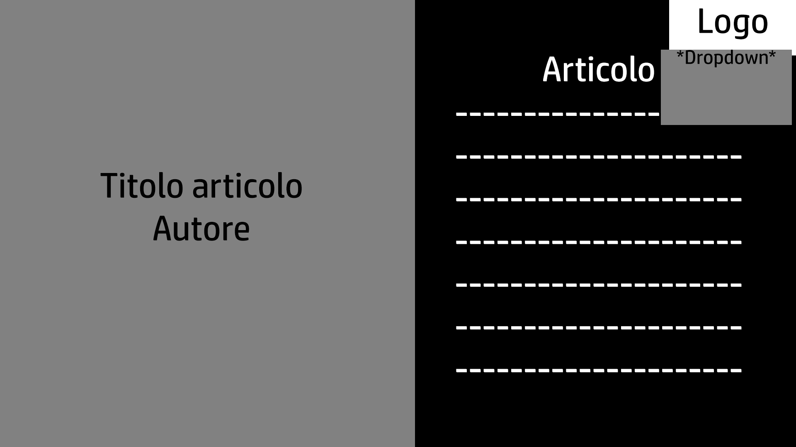

Questo sito si propone come presentazione e centro di divulgazione del progetto Petrolio.
Petrolio vuole essere una piattaforma di sensibilizzazione e divulgazione sulla questione climatica, non solo diffondendo ma cercando anche di invertire la classica comunicazione green e colorata. Proponendo una comunicazione più nera e più cupa, provando a descrivere al meglio una situazione che purtroppo ormai non è più ne verde ne sorridente.
Petrolio cerca di sensibilizzare con una comunicazione più d'impatto con la sua homepage che propone: La splash page iniziale (la cui foto verrà cambiata ogni mese, scegliendo foto rappresentative tramite concorso social); E il cronometro della fine (settato all'inizio del 2050 facendo fede a recenti studi, ma che potrà essere aggiornato tramite il codice JS all'evenienza). In seguito propone conenuti dalla fruizione più lenta, come il suo manifesto (alternato ad immagini) e la sezione degli articoli. Inoltre è presente un menù che permette di navigare il sito, con un tasto che porta alla homepage, uno che porta direttamente all'elenco degli articoli, e uno alla pagina di documentazione.
Il target del sito vuole essere focalizzato sugli under 30. Cercando di coglierne l'attenzione con contenuti dalla rapida fruizione per primi (come splash page o timer), essendo la fascia in target molto abituata a contenuti lampo.
L'analisi dei competitors si potrebbe allargare a tutta la comunicazione riguardante l'ecologia, per la maggior parte capitanata dal colore verde. I 3 siti più simili (per la loro sezione di notizie e divulgazione) sono quello di Greenpace, Extinction Rebellion e Friday For Future (anche li presente un timer). Per quanto anche questi siti, al contrario di altre testate, cerchino di comunicare l'urgenza climatica rimangono sempre legate a una comunicazione molto accesa.
Wireframe iniziale studiato per desktop e mobile.
Rispetto alla versione attuale si può notare come il menù a cascata fosse composto da una banda orizzontale e il logo posto al centro, è stato deciso di spostarlo di lato e fuori asse rispetto alla simmetria del sito per renderlo più individuabile come elemento esterno e cliccabile. Inoltre, come si può vedere nella seconda immagine, la struttura dell'alternarsi tra testo e immagini nell'homepage è modificata nella versione mobile, passando da una suddivisione a scacchiera (più orizzontale) a una suddivisione in bande più efficiente per i dispositivi mobile.
Wireframe studiato per la struttura delle pagine dei singoli articoli.
Il sito segue uno stile molto semplice, senza sfumature e con pochi colori. Il colore dominante è il nero, che vuole trasmettere la sensazione di difficoltà che il sito vuole raccontare, ma anche comunicare l'inquinamento del petrolio e dello smog. Sono state usate poche immagini, che devono essere utili ad accompagnare il visitatore ma al tempo stesso essere di forte impatto per aiutare a trasmettere il messaggio del progetto.
HTML per la struttura del sito
CSS per la veste grafica
JS per la funzione del timer e la funzione di scroll in cima alla pagina.
NotePad++ scrittura di codice
Illustrator per la creazione del logo
Photoshop aggiustamenti e ritocchi ai materiali usati
GitHub Pages hosting del sito
Google Analytics monitoraggio visitatori
L'idea di questo sito è nata osservando la tendenza a comunicare l'ecologia con colori sgargianti, spesso con messaggi positivi e speranzosi. Una comunicazione, quella mainstream, che sentivo collidere con il mio modo di sentirmi riguardo a certi argomenti. Da qui l'idea di Petrolio, cercare di invertire il racconto positivo e speranzoso dell'ecologia, trasformandolo nel racconto pessimista di una generazione che deve convivere con l'ansia di un mondo che brucia sotto i suoi piedi.
L'obiettivo di Petrolio è appunto ribaltare una narrazione, andando a rendere visibile e più tangibile l'urgenza climatica, cercando di informare tramite messaggi più articolati (testi lunghi) e cercando di colpire tramite messaggi più diretti (foto suggestive e timer).
Il sito, essendo strutturato come divulgativo, si rivolge ovviamente un po' a tutti, ma cerca in particolare di parlare agli under 30, catturando la loro attenzione mettendo in primo piano comunicazioni rapide e d'impatto piuttosto che long form, cercando poi di accompagnarli all'approfondimento.
Attualmente la promozione è avvenuta soltanto con una diffusione via messaggio. Il progetto però è strutturato in modo da avere una pagina Instagram che verrebbe mantenuta attiva dalla ricondivisione di articoli e dai contest fotografici per scegliere la foto di copertina del mese (dando visibilità a fotografi sensibili alla tematica e ricevendone da loro, in modo da avere risonanza in una bolla già esistente).